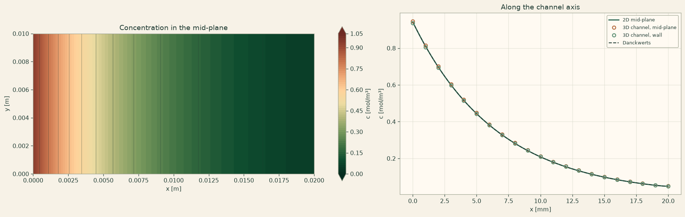
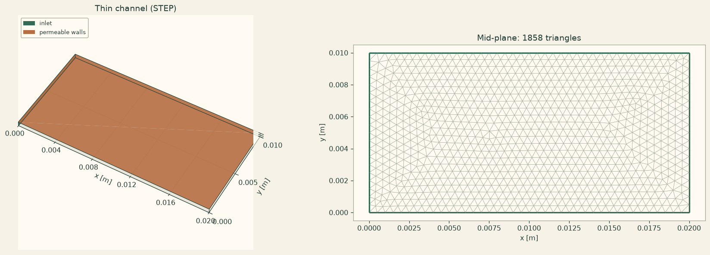

Docs › Examples › Mass transfer out of a thin flow channel
Mass transport · 2D
Mass transfer out of a thin flow channel
A gas flows through a thin channel with two permeable walls; the channel is computed in its mid-plane with the wall transfer as an out-of-plane sink.
Run locally with OneSimulation. The example downloads are free. Running them requires an activated runtime. OneSimulation 1.0 · CPython 3.13 on macOS (Apple Silicon), Ubuntu 22.04 (x86-64), and Windows x64. Installation and activation · View pilot plans. Scope of the reference checks.


What it computes
OneSimulation solves convection, diffusion and the out-of-plane sink with the SpeciesTransport model on the mid-plane section (Danckwerts feed, convective outflow) and, as a check of the reduction, the full 3D channel with a film law on both walls. The script that builds the STEP file comes with the notebook.
What it checks
The 2D outlet ratio is 0.048748 on the finest mesh and agrees with the Danckwerts solution within 0.001 % on all four meshes. The resolved channel with 20,480 hexahedra and 179,129 concentration nodes passes 2.40 % more solute at the outlet than the reduced model.
Geometry
Save the STEP file thin_channel_wall_mass_transfer.step next to the notebook before running it.


The geometry script
The script thin_channel_wall_mass_transfer_geometry.py builds the geometry with the CAD objects of OneSimulation and writes the file. Change a dimension there, run it, and run the notebook again.
"""Geometry of the OneSimulation example "Mass transfer out of a thin flow channel".
Builds the thin channel, 20 mm long, 10 mm wide and 0.5 mm thick, with the CAD objects of
OneSimulation and writes thin_channel_wall_mass_transfer.step. The faces keep their names: x_min
(inlet), x_max (outlet), y_min and y_max (side walls), z_min and z_max (the two permeable walls).
The example computes on the mid-plane z = 0.25 mm and uses the full channel as its 3D check.
"""
from onesim.cad.d3 import Box
Box(length=0.020, width=0.010, height=0.0005).save("thin_channel_wall_mass_transfer.step")The notebook
The complete notebook, cell by cell. Run it to produce the figures and the comparison printout.
This benchmark follows one dilute species at a prescribed, uniform velocity. It compares resolved wall exchange with a thickness-averaged sink.
A channel of length \(L\), width \(W\) and small thickness \(d\) carries a gas at the mean velocity \(u\). A species fed at the concentration \(c_0\) leaves through the two permeable walls \(z=0\) and \(z=d\) with the film law \(N=k\,(c-c_\infty)\), \(c_\infty=0\). When the thickness is small compared with the diffusion length, the concentration is nearly uniform across \(d\), and averaging the species balance over the thickness turns the wall flux into a volumetric sink:
OneSimulation solves this two-dimensional problem with the SpeciesTransport model: the sink is a decay rate \(2k/d\), the inlet a Danckwerts feed, the outlet a convective outflow, with quadratic triangles on the mid-plane section of the STEP channel. As a check of the reduction, the full channel is also computed in 3D with the film law MassTransferFlux on the two walls.
| Boundary | 2D mid-plane | 3D channel |
|---|---|---|
inlet x_min | Danckwerts feed \(c_0\) | Danckwerts feed \(c_0\) |
outlet x_max | convective outflow | convective outflow |
side walls y_min, y_max | no flux | no flux |
permeable walls z_min, z_max | sink \(2k/d\) in the volume | \(N=k\,c\) |
Reference. P. V. Danckwerts, Continuous flow systems, Chem. Eng. Sci. 2, 1-13 (1953); O. Levenspiel, Chemical Reaction Engineering, 3rd ed., Wiley 1999, ch. 13. With a uniform velocity the 2D solution does not depend on \(y\) and equals the dispersion model with the first-order rate \(\kappa=2k/d\): with \(\mathrm{Pe}=uL/D\), \(\mathrm{Da}=\kappa L/u\) and \(a=\sqrt{1+4\mathrm{Da}/\mathrm{Pe}}\),
The reduction itself is accurate when the mass-transfer Biot number \(\mathrm{Bi}=kd/(2D)\) is small; the 3D channel measures the remaining difference.
import numpy as np
from onesim.cad.exchange import load
from onesim.meshing import StructuredHexahedralMesher, TriangularMesher
from onesim.numerics import Numerics
from onesim.numerics.fem import FiniteElement, Lagrange
from onesim.numerics.linear import SparseDirect
from onesim.physics.chemistry import (
DanckwertsInflow,
MassTransferFlux,
SpeciesOutflow,
SpeciesTransport,
TransportSpecies,
)
from onesim.simulation import Problem, Simulation
from onesim.visualization import plots, theme
theme.set()Geometry and mesh
The channel from the STEP file and its mid-plane, meshed with quadratic triangles of four sizes for a mesh study.
channel = load("thin_channel_wall_mass_transfer.step")
plane = channel.section((0, 0, 1), origin=(0, 0, 0.00025))
length, width, thickness = channel.size
meshes = {size: TriangularMesher(target_size=size).generate(plane) for size in (2e-3, 1e-3, 5e-4, 3e-4)}
fig = plots.figure(1, 2, size=(15, 5))
plots.geometry(
channel,
selection={"inlet": channel.boundaries.x_min, "permeable walls": channel.boundaries.z_max},
labels=False,
camera=plots.Camera(elevation=50, azimuth=-60),
title="Thin channel (STEP)",
ax=fig[0],
)
plots.mesh(
meshes[3e-4],
groups=("all",),
legend=False,
title=f"Mid-plane: {meshes[3e-4].cell_count} triangles",
ax=fig[1],
)
plots.show()Model
Air with a light gas: \(D=2\times10^{-5}\) m²/s, mean velocity 5 cm/s, film coefficient 2 mm/s, feed 1 mol/m³.
diffusivity, velocity, film, feed = 2e-5, 0.05, 2e-3, 1.0
sink = 2 * film / thickness
peclet, damkoehler = velocity * length / diffusivity, sink * length / velocity
print(
f"Pe = {peclet:.0f}, Da = {damkoehler:.2f}, Biot number k d / 2D = {film * thickness / (2 * diffusivity):.4f}"
)
planar = SpeciesTransport(
domain=plane.domain(),
species=(TransportSpecies("A", diffusivity=diffusivity, decay_rate=sink),),
velocity=(velocity, 0.0),
)
fields = {
size: Simulation(
problem=Problem(
name="Thin channel, mid-plane",
geometry=plane,
physics=(planar,),
boundary_conditions=(
DanckwertsInflow(
physics=planar, boundary=plane.boundaries.x_min, concentration=feed
),
SpeciesOutflow(physics=planar, boundary=plane.boundaries.x_max),
),
),
mesh=mesh,
numerics=Numerics(
spatial=FiniteElement(element=Lagrange(order=2)), linear_solver=SparseDirect()
),
)
.solve_stationary()
.field(planar.field("A"))
for size, mesh in meshes.items()
}Three-dimensional check
The full channel with the film law on both walls, 128 x 20 x 8 hexahedra. Refinement targets axial transport and the concentration variation normal to the permeable walls.
solid = SpeciesTransport(
domain=channel.volume,
species=(TransportSpecies("A", diffusivity=diffusivity),),
velocity=(velocity, 0.0, 0.0),
)
volume_mesh = StructuredHexahedralMesher(cells=(128, 20, 8)).generate(channel)
volume = (
Simulation(
problem=Problem(
name="Thin channel, 3D",
geometry=channel,
physics=(solid,),
boundary_conditions=(
DanckwertsInflow(
physics=solid, boundary=channel.boundaries.x_min, concentration=feed
),
SpeciesOutflow(physics=solid, boundary=channel.boundaries.x_max),
MassTransferFlux(
physics=solid,
boundary=channel.boundaries.z_min | channel.boundaries.z_max,
coefficient=film,
),
),
),
mesh=volume_mesh,
numerics=Numerics(
spatial=FiniteElement(element=Lagrange(order=2)), linear_solver=SparseDirect()
),
)
.solve_stationary()
.field(solid.field("A"))
)Comparison
The outlet concentration (convective outflow divided by the feed), the share of the species that leaves through the walls, and the profile along the channel axis.
root = np.sqrt(1 + 4 * damkoehler / peclet)
exit_ratio = (
4
* root
* np.exp(peclet / 2)
/ ((1 + root) ** 2 * np.exp(root * peclet / 2) - (1 - root) ** 2 * np.exp(-root * peclet / 2))
)
print(" mesh size 2D c_out / c0 Danckwerts deviation feed + outflow + wall loss")
for size, field in fields.items():
print(f"2D mesh: {meshes[size].cell_count} triangles, {len(field.space.dof_coordinates)} concentration nodes")
outflow = field.boundary_flux(plane.boundaries.x_max) / (velocity * width * feed)
balance = (
field.boundary_flux(plane.boundaries.x_min)
+ field.boundary_flux(plane.boundaries.x_max)
+ sink * field.integrate().value
)
print(
f"{1e3 * size:8.1f} mm {outflow:14.6f} {exit_ratio:12.6f} {100 * (outflow / exit_ratio - 1):+9.3f} % {balance:16.1e}"
)
print(f"3D mesh: {volume_mesh.cell_count} hexahedra, {len(volume.space.dof_coordinates)} concentration nodes")
three = volume.boundary_flux(channel.boundaries.x_max) / (velocity * width * thickness * feed)
walls = volume.boundary_flux(channel.boundaries.z_min | channel.boundaries.z_max) / (
velocity * width * thickness * feed
)
print(
f"3D channel: c_out / c0 = {three:.6f} ({100 * (three / exit_ratio - 1):+.2f} % against the reduced model), "
f"share through the walls {walls:.4f} (reduced model {1 - exit_ratio:.4f})"
)The mid-plane model reproduces the exact solution of the reduced problem on every mesh. The full 3D channel passes slightly more species: at the walls the concentration is lower than its thickness average, by a fraction of about Bi/3 = 0.8 %, so the walls transfer a little less; over Da = 3.2 this adds up to the 2.4 % higher outlet concentration.
Figure
The concentration in the mid-plane, and the concentration along the channel axis from the 2D model, the 3D channel (mid-plane and wall) and the Danckwerts profile.
x = np.linspace(0.0, length, 201)
denominator = (1 - root) / 2 - (1 + root) ** 2 / (2 * (1 - root)) * np.exp(peclet * root)
profile = (
feed
/ denominator
* (
np.exp(peclet * (1 + root) / 2 * x / length)
- (1 + root)
/ (1 - root)
* np.exp(peclet * root)
* np.exp(peclet * (1 - root) / 2 * x / length)
)
)
fig = plots.figure(1, 2, size=(16, 5))
plots.surface(
fields[3e-4],
limits=(0.0, 1.0),
contours=11,
subdivisions=2,
xlabel="x [m]",
ylabel="y [m]",
label="c [mol/m³]",
title="Concentration in the mid-plane",
ax=fig[0],
)
plots.line(
1e3 * x,
{
"2D mid-plane": np.asarray(
fields[3e-4].evaluate(np.column_stack((x, np.full_like(x, width / 2))))
).reshape(-1)
},
points={
"3D channel, mid-plane": (
1e3 * x[::10],
np.asarray(
volume.evaluate(
np.column_stack((x[::10], np.full(21, width / 2), np.full(21, thickness / 2)))
)
).reshape(-1),
),
"3D channel, wall": (
1e3 * x[::10],
np.asarray(
volume.evaluate(np.column_stack((x[::10], np.full(21, width / 2), np.zeros(21))))
).reshape(-1),
),
},
reference={"Danckwerts": (1e3 * x, profile)},
xlabel="x [mm]",
ylabel="c [mol/m³]",
title="Along the channel axis",
legend="upper right",
ax=fig[1],
)
plots.show()Going further
Raise the film coefficient tenfold and the Biot number reaches 0.25: the 3D concentration at the walls drops visibly below the mid-plane value and the reduced model overpredicts the transfer. Replace the uniform velocity by the coupled velocity field of a channel with obstacles (FieldCoupling from a flow model) and the mid-plane model still applies, while the closed-form check does not.